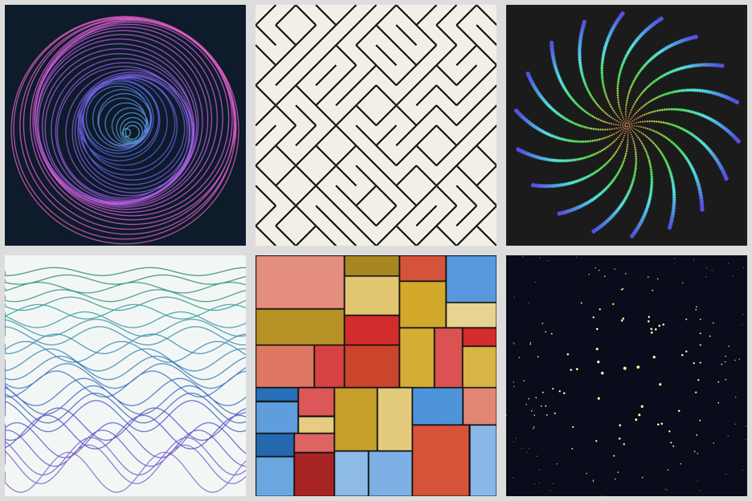
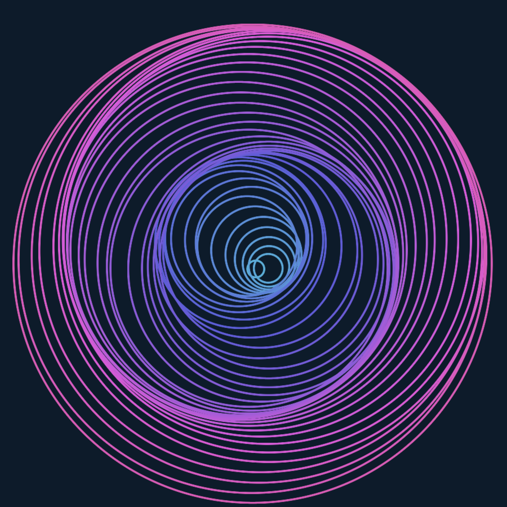
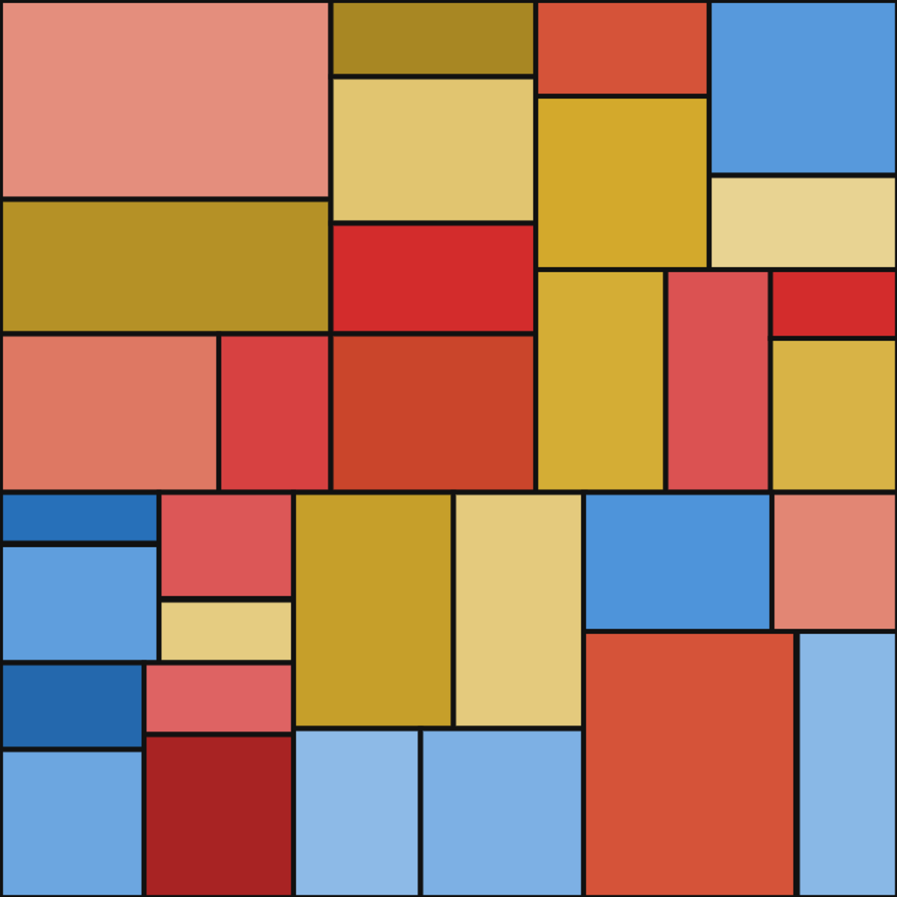

Six generative art pieces in one Python file, no dependencies
Six small programs that draw pictures: rings, a maze grid, a spiral, waves, blocks and stars. Each one is a short Python function that writes an SVG file directly. No packages, no graphics library - just math, random, and string formatting. The whole program is one loop: for each piece, seed random.Random(i), call its function, write the SVG into out/.
The code is available on GitHub: https://github.com/ido-lempert/six-compositions - the whole project is that one file.
Every piece draws from its own seeded generator, random.Random(i), so running the script again produces byte-identical SVGs. I verified this: a fresh clone plus python3 art.py reproduces all six files in out/ exactly. Generative art you can diff.
The six pieces. Rings: forty concentric circles drifting on a sine wave, hue walking from blue to pink. Grid: a 12 by 12 maze of diagonal slashes, the old 10 PRINT pattern. Spiral: 900 dots, with growing sizes and cycling hues. Waves: 26 sine curves with random phase. Blocks: recursive rectangle splits, Mondrian-style. Stars: 160 dots fading with distance from the center.



Why write SVG by hand? An SVG is just text, so a whole drawing fits in an f-string and the diff reads like a change log. Python 3, standard library only: python3 art.py writes all six files into out/.
These are static 600 by 600 images, with no animation or interactivity. A start, not a gallery - the point was to show how far one file and one seed per piece can go.